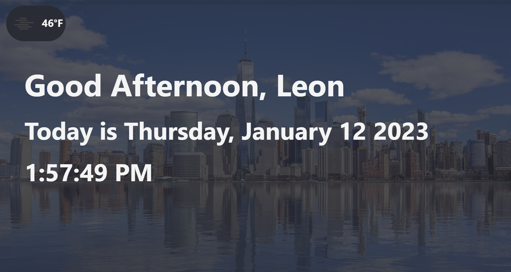

I plan for my fall project to be a personal dashboard website for myself using React. I have been wanting to learn React for a while now, and I think this would be a great opportunity to do so. I have done a bit of React in the past, but nothing big enough to fully get an understanding of React and all of its functions. I also plan to use this project as a way to learn more about CSS styling and how to make a website look the same on multiple screen sizes.
I plan to include a welcome message, a weather component, my calendar, and my assignments. I plan to use API calls to the OpenWeatherMap API to get the weather information. I'm not sure how easy it will be to get the calendar and assignments information because of Google and the portal's stringent security, but I'm sure Mr. Golanka or Mr. Lindow will be able to help me.
My goal for this project is to gain a better understanding of React and CSS styling. An additional goal is to possibly work React into the APW website in the future. I'm not sure how doable this is, but I think it would be a great addition to the website, but a bit daunting for inexperienced developers.
Lastly, I'd like to continue working as a manager for the APW website. While I won't make any active contributions, I would be happy to answer any questions that anyone who continues working on the website has.
December 8th, 2022
This week I started by simply doing the basic setup necessary for the project. This meant installing React through NPM and creating a new React app. I then also created a repository on GitHub for the project. I am yet to start working on the actual structure of the website, but I have a few ideas for how I want to do it.
The general idea at the moment is to have a sort of landing page that will have a welcome message and a few other widgets including things like weather. I want to then be able to scroll down and reveal other widgets. These widgets would include things like my calendar, assignments, and maybe even a to-do list that I can modify. A concept that I thought of was making a user config file, allowing the widgets and messages to all be personalized.
Semester Update: January 12th, 2023
This semester has been decently productive. While I did get a good amount done, I did not finish as much as I think I could have. So far I've managed to finish the landing page of the website. This landing page includes a greeting, a picture widget based on time, a time widget, and a weather widget using the OpenWeatherMap API. I also have a few other widgets that I have not yet implemented, but I plan to do so soon.
At the moment, the backgroud image widget changes based on the time of day. There are four different images, one for morning, one for afternoon, one for evening, and one for night.\ Currently, the weather widget only reloads when the page reloads. In the future, this might be changed to reload every 20 minutes or so.